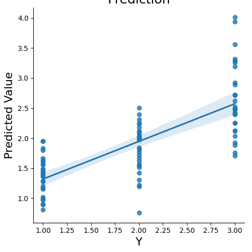
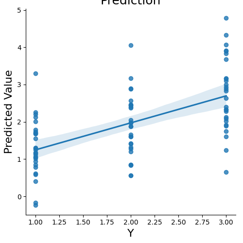
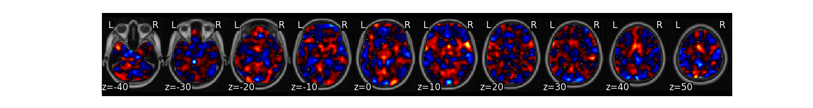
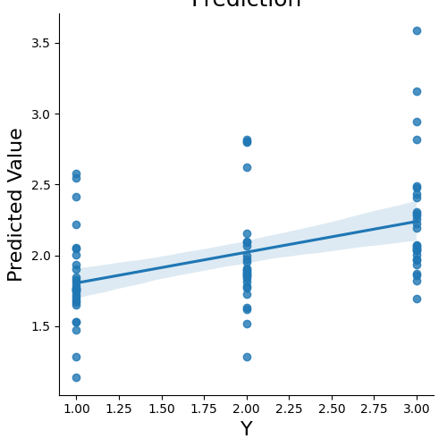
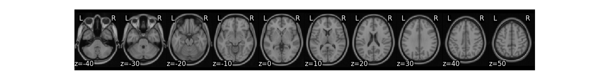
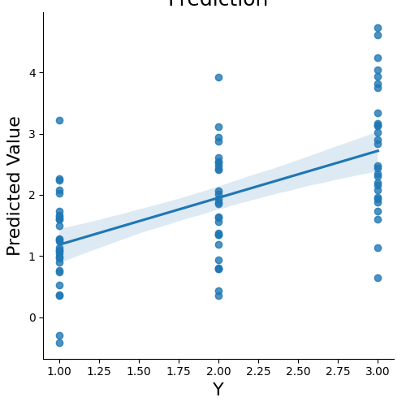
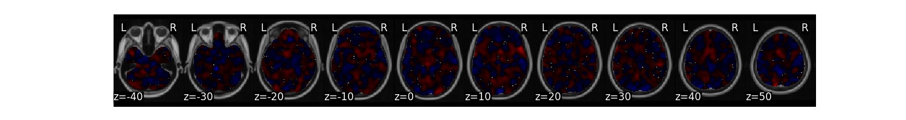
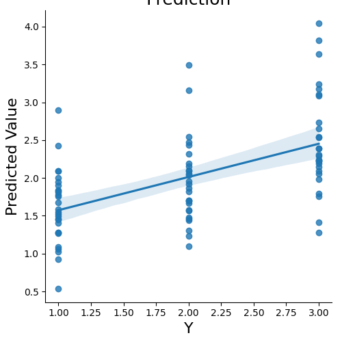
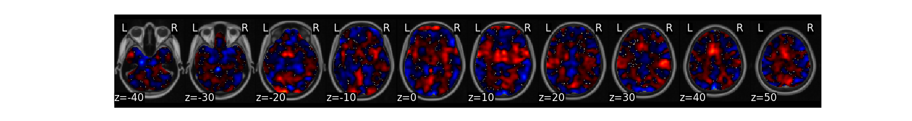

Note
Go to the end to download the full example code
Multivariate Prediction¶
Running MVPA style analyses using multivariate regression is even easier and faster than univariate methods. All you need to do is specify the algorithm and cross-validation parameters. Currently, we have several different linear algorithms implemented from scikit-learn.
Load Data¶
First, let’s load the pain data for this example. We need to specify the training levels. We will grab the pain intensity variable from the data.X field.
from nltools.datasets import fetch_pain
data = fetch_pain()
data.Y = data.X['PainLevel']
/usr/share/miniconda3/envs/test/lib/python3.8/site-packages/nilearn/maskers/nifti_masker.py:108: UserWarning: imgs are being resampled to the mask_img resolution. This process is memory intensive. You might want to provide a target_affine that is equal to the affine of the imgs or resample the mask beforehand to save memory and computation time.
warnings.warn(
Prediction with Cross-Validation¶
We can now predict the output variable is a dictionary of the most useful output from the prediction analyses. The predict function runs the prediction multiple times. One of the iterations uses all of the data to calculate the ‘weight_map’. The other iterations are to estimate the cross-validated predictive accuracy.
stats = data.predict(algorithm='ridge',
cv_dict={'type': 'kfolds','n_folds': 5,'stratified':data.Y})
- 

overall Root Mean Squared Error: 0.00
overall Correlation: 1.00
overall CV Root Mean Squared Error: 0.56
overall CV Correlation: 0.74
Display the available data in the output dictionary
stats.keys()
dict_keys(['Y', 'yfit_all', 'intercept', 'weight_map', 'yfit_xval', 'intercept_xval', 'weight_map_xval', 'cv_idx', 'rmse_all', 'r_all', 'rmse_xval', 'r_xval'])
Plot the multivariate weight map
stats['weight_map'].plot()
Return the cross-validated predicted data
stats['yfit_xval']
array([2.4290974 , 1.6314716 , 1.8126677 , 3.55868 , 0.90207404,
1.2204293 , 2.7179866 , 1.3615552 , 1.6188321 , 3.3171535 ,
0.80493325, 1.5152462 , 2.9260135 , 1.436187 , 1.7737719 ,
1.9213711 , 1.8017578 , 1.1947886 , 2.4830403 , 0.89364 ,
1.8442755 , 2.4820824 , 1.440007 , 1.4230464 , 4.0127053 ,
1.4100499 , 2.3946798 , 1.886311 , 1.3747356 , 2.1127977 ,
2.1198812 , 1.1560123 , 2.0791116 , 3.9388785 , 1.2056187 ,
2.1786819 , 3.2859497 , 1.607697 , 1.6772155 , 2.524396 ,
1.4692415 , 2.2496297 , 2.2506313 , 1.5619735 , 1.9757603 ,
3.2622325 , 1.2873244 , 2.0369096 , 1.7596403 , 0.96636 ,
2.2338262 , 1.7050961 , 1.8357794 , 0.75495577, 2.6244998 ,
0.99156165, 2.3120208 , 2.2533555 , 1.9480424 , 2.010985 ,
2.0345411 , 1.0214996 , 1.3073232 , 2.4055953 , 1.383581 ,
1.5605361 , 2.3912082 , 1.6636682 , 2.0051541 , 2.4855347 ,
1.2744508 , 2.5009992 , 2.8917837 , 1.9525554 , 1.7255871 ,
3.1938958 , 1.4861526 , 1.9714624 , 2.124084 , 1.5545247 ,
1.5466335 , 2.7263203 , 1.1705276 , 2.1081421 ], dtype=float32)
Algorithms¶
There are several types of linear algorithms implemented including: Support Vector Machines (svr), Principal Components Analysis (pcr), and penalized methods such as ridge and lasso. These examples use 5-fold cross-validation holding out the same subject in each fold.
subject_id = data.X['SubjectID']
svr_stats = data.predict(algorithm='svr',
cv_dict={'type': 'kfolds','n_folds': 5,
'subject_id':subject_id}, **{'kernel':"linear"})
- 
- 
overall Root Mean Squared Error: 0.10
overall Correlation: 0.99
overall CV Root Mean Squared Error: 0.88
overall CV Correlation: 0.57
Lasso Regression
lasso_stats = data.predict(algorithm='lasso',
cv_dict={'type': 'kfolds','n_folds': 5,
'subject_id':subject_id}, **{'alpha':.1})
- 
- 
overall Root Mean Squared Error: 0.69
overall Correlation: 0.58
overall CV Root Mean Squared Error: 0.74
overall CV Correlation: 0.43
Principal Components Regression
pcr_stats = data.predict(algorithm='pcr',
cv_dict={'type': 'kfolds','n_folds': 5,
'subject_id':subject_id})
- 
- 
overall Root Mean Squared Error: 0.00
overall Correlation: 1.00
overall CV Root Mean Squared Error: 0.91
overall CV Correlation: 0.58
Principal Components Regression with Lasso
pcr_stats = data.predict(algorithm='lassopcr',
cv_dict={'type': 'kfolds','n_folds': 5,
'subject_id':subject_id})
- 
- 
overall Root Mean Squared Error: 0.48
overall Correlation: 0.84
overall CV Root Mean Squared Error: 0.73
overall CV Correlation: 0.54
Cross-Validation Schemes¶
There are several different ways to perform cross-validation. The standard approach is to use k-folds, where the data is equally divided into k subsets and each fold serves as both training and test. Often we want to hold out the same subjects in each fold. This can be done by passing in a vector of unique subject IDs that correspond to the images in the data frame.
subject_id = data.X['SubjectID']
ridge_stats = data.predict(algorithm='ridge',
cv_dict={'type': 'kfolds','n_folds': 5,'subject_id':subject_id},
plot=False, **{'alpha':.1})
/usr/share/miniconda3/envs/test/lib/python3.8/site-packages/sklearn/linear_model/_ridge.py:237: LinAlgWarning: Ill-conditioned matrix (rcond=2.92615e-08): result may not be accurate.
dual_coef = linalg.solve(K, y, assume_a="pos", overwrite_a=False)
/usr/share/miniconda3/envs/test/lib/python3.8/site-packages/sklearn/linear_model/_ridge.py:237: LinAlgWarning: Ill-conditioned matrix (rcond=4.08682e-08): result may not be accurate.
dual_coef = linalg.solve(K, y, assume_a="pos", overwrite_a=False)
/usr/share/miniconda3/envs/test/lib/python3.8/site-packages/sklearn/linear_model/_ridge.py:237: LinAlgWarning: Ill-conditioned matrix (rcond=3.08772e-08): result may not be accurate.
dual_coef = linalg.solve(K, y, assume_a="pos", overwrite_a=False)
/usr/share/miniconda3/envs/test/lib/python3.8/site-packages/sklearn/linear_model/_ridge.py:237: LinAlgWarning: Ill-conditioned matrix (rcond=4.02122e-08): result may not be accurate.
dual_coef = linalg.solve(K, y, assume_a="pos", overwrite_a=False)
/usr/share/miniconda3/envs/test/lib/python3.8/site-packages/sklearn/linear_model/_ridge.py:237: LinAlgWarning: Ill-conditioned matrix (rcond=3.21618e-08): result may not be accurate.
dual_coef = linalg.solve(K, y, assume_a="pos", overwrite_a=False)
/usr/share/miniconda3/envs/test/lib/python3.8/site-packages/sklearn/linear_model/_ridge.py:237: LinAlgWarning: Ill-conditioned matrix (rcond=3.16817e-08): result may not be accurate.
dual_coef = linalg.solve(K, y, assume_a="pos", overwrite_a=False)
overall Root Mean Squared Error: 0.00
overall Correlation: 1.00
overall CV Root Mean Squared Error: 0.91
overall CV Correlation: 0.58
Sometimes we want to ensure that the training labels are balanced across folds. This can be done using the stratified k-folds method.
ridge_stats = data.predict(algorithm='ridge',
cv_dict={'type': 'kfolds','n_folds': 5, 'stratified':data.Y},
plot=False, **{'alpha':.1})
/usr/share/miniconda3/envs/test/lib/python3.8/site-packages/sklearn/linear_model/_ridge.py:237: LinAlgWarning: Ill-conditioned matrix (rcond=2.92615e-08): result may not be accurate.
dual_coef = linalg.solve(K, y, assume_a="pos", overwrite_a=False)
/usr/share/miniconda3/envs/test/lib/python3.8/site-packages/sklearn/linear_model/_ridge.py:237: LinAlgWarning: Ill-conditioned matrix (rcond=3.37859e-08): result may not be accurate.
dual_coef = linalg.solve(K, y, assume_a="pos", overwrite_a=False)
/usr/share/miniconda3/envs/test/lib/python3.8/site-packages/sklearn/linear_model/_ridge.py:237: LinAlgWarning: Ill-conditioned matrix (rcond=2.93544e-08): result may not be accurate.
dual_coef = linalg.solve(K, y, assume_a="pos", overwrite_a=False)
/usr/share/miniconda3/envs/test/lib/python3.8/site-packages/sklearn/linear_model/_ridge.py:237: LinAlgWarning: Ill-conditioned matrix (rcond=3.40221e-08): result may not be accurate.
dual_coef = linalg.solve(K, y, assume_a="pos", overwrite_a=False)
/usr/share/miniconda3/envs/test/lib/python3.8/site-packages/sklearn/linear_model/_ridge.py:237: LinAlgWarning: Ill-conditioned matrix (rcond=3.37435e-08): result may not be accurate.
dual_coef = linalg.solve(K, y, assume_a="pos", overwrite_a=False)
/usr/share/miniconda3/envs/test/lib/python3.8/site-packages/sklearn/linear_model/_ridge.py:237: LinAlgWarning: Ill-conditioned matrix (rcond=3.50149e-08): result may not be accurate.
dual_coef = linalg.solve(K, y, assume_a="pos", overwrite_a=False)
overall Root Mean Squared Error: 0.00
overall Correlation: 1.00
overall CV Root Mean Squared Error: 0.56
overall CV Correlation: 0.74
Leave One Subject Out Cross-Validaiton (LOSO) is when k=n subjects. This can be performed by passing in a vector indicating subject id’s of each image and using the loso flag.
ridge_stats = data.predict(algorithm='ridge',
cv_dict={'type': 'loso','subject_id': subject_id},
plot=False, **{'alpha':.1})
/usr/share/miniconda3/envs/test/lib/python3.8/site-packages/sklearn/linear_model/_ridge.py:237: LinAlgWarning: Ill-conditioned matrix (rcond=2.92615e-08): result may not be accurate.
dual_coef = linalg.solve(K, y, assume_a="pos", overwrite_a=False)
/usr/share/miniconda3/envs/test/lib/python3.8/site-packages/sklearn/linear_model/_ridge.py:237: LinAlgWarning: Ill-conditioned matrix (rcond=2.77026e-08): result may not be accurate.
dual_coef = linalg.solve(K, y, assume_a="pos", overwrite_a=False)
/usr/share/miniconda3/envs/test/lib/python3.8/site-packages/sklearn/linear_model/_ridge.py:237: LinAlgWarning: Ill-conditioned matrix (rcond=2.57037e-08): result may not be accurate.
dual_coef = linalg.solve(K, y, assume_a="pos", overwrite_a=False)
/usr/share/miniconda3/envs/test/lib/python3.8/site-packages/sklearn/linear_model/_ridge.py:237: LinAlgWarning: Ill-conditioned matrix (rcond=2.55818e-08): result may not be accurate.
dual_coef = linalg.solve(K, y, assume_a="pos", overwrite_a=False)
/usr/share/miniconda3/envs/test/lib/python3.8/site-packages/sklearn/linear_model/_ridge.py:237: LinAlgWarning: Ill-conditioned matrix (rcond=2.9375e-08): result may not be accurate.
dual_coef = linalg.solve(K, y, assume_a="pos", overwrite_a=False)
/usr/share/miniconda3/envs/test/lib/python3.8/site-packages/sklearn/linear_model/_ridge.py:237: LinAlgWarning: Ill-conditioned matrix (rcond=2.53838e-08): result may not be accurate.
dual_coef = linalg.solve(K, y, assume_a="pos", overwrite_a=False)
/usr/share/miniconda3/envs/test/lib/python3.8/site-packages/sklearn/linear_model/_ridge.py:237: LinAlgWarning: Ill-conditioned matrix (rcond=2.39935e-08): result may not be accurate.
dual_coef = linalg.solve(K, y, assume_a="pos", overwrite_a=False)
/usr/share/miniconda3/envs/test/lib/python3.8/site-packages/sklearn/linear_model/_ridge.py:237: LinAlgWarning: Ill-conditioned matrix (rcond=2.78066e-08): result may not be accurate.
dual_coef = linalg.solve(K, y, assume_a="pos", overwrite_a=False)
/usr/share/miniconda3/envs/test/lib/python3.8/site-packages/sklearn/linear_model/_ridge.py:237: LinAlgWarning: Ill-conditioned matrix (rcond=2.6986e-08): result may not be accurate.
dual_coef = linalg.solve(K, y, assume_a="pos", overwrite_a=False)
/usr/share/miniconda3/envs/test/lib/python3.8/site-packages/sklearn/linear_model/_ridge.py:237: LinAlgWarning: Ill-conditioned matrix (rcond=2.78474e-08): result may not be accurate.
dual_coef = linalg.solve(K, y, assume_a="pos", overwrite_a=False)
/usr/share/miniconda3/envs/test/lib/python3.8/site-packages/sklearn/linear_model/_ridge.py:237: LinAlgWarning: Ill-conditioned matrix (rcond=2.83186e-08): result may not be accurate.
dual_coef = linalg.solve(K, y, assume_a="pos", overwrite_a=False)
/usr/share/miniconda3/envs/test/lib/python3.8/site-packages/sklearn/linear_model/_ridge.py:237: LinAlgWarning: Ill-conditioned matrix (rcond=2.29513e-08): result may not be accurate.
dual_coef = linalg.solve(K, y, assume_a="pos", overwrite_a=False)
/usr/share/miniconda3/envs/test/lib/python3.8/site-packages/sklearn/linear_model/_ridge.py:237: LinAlgWarning: Ill-conditioned matrix (rcond=3.21078e-08): result may not be accurate.
dual_coef = linalg.solve(K, y, assume_a="pos", overwrite_a=False)
/usr/share/miniconda3/envs/test/lib/python3.8/site-packages/sklearn/linear_model/_ridge.py:237: LinAlgWarning: Ill-conditioned matrix (rcond=2.65197e-08): result may not be accurate.
dual_coef = linalg.solve(K, y, assume_a="pos", overwrite_a=False)
/usr/share/miniconda3/envs/test/lib/python3.8/site-packages/sklearn/linear_model/_ridge.py:237: LinAlgWarning: Ill-conditioned matrix (rcond=2.53092e-08): result may not be accurate.
dual_coef = linalg.solve(K, y, assume_a="pos", overwrite_a=False)
/usr/share/miniconda3/envs/test/lib/python3.8/site-packages/sklearn/linear_model/_ridge.py:237: LinAlgWarning: Ill-conditioned matrix (rcond=2.65197e-08): result may not be accurate.
dual_coef = linalg.solve(K, y, assume_a="pos", overwrite_a=False)
/usr/share/miniconda3/envs/test/lib/python3.8/site-packages/sklearn/linear_model/_ridge.py:237: LinAlgWarning: Ill-conditioned matrix (rcond=2.35583e-08): result may not be accurate.
dual_coef = linalg.solve(K, y, assume_a="pos", overwrite_a=False)
/usr/share/miniconda3/envs/test/lib/python3.8/site-packages/sklearn/linear_model/_ridge.py:237: LinAlgWarning: Ill-conditioned matrix (rcond=2.85209e-08): result may not be accurate.
dual_coef = linalg.solve(K, y, assume_a="pos", overwrite_a=False)
/usr/share/miniconda3/envs/test/lib/python3.8/site-packages/sklearn/linear_model/_ridge.py:237: LinAlgWarning: Ill-conditioned matrix (rcond=2.54651e-08): result may not be accurate.
dual_coef = linalg.solve(K, y, assume_a="pos", overwrite_a=False)
/usr/share/miniconda3/envs/test/lib/python3.8/site-packages/sklearn/linear_model/_ridge.py:237: LinAlgWarning: Ill-conditioned matrix (rcond=2.91525e-08): result may not be accurate.
dual_coef = linalg.solve(K, y, assume_a="pos", overwrite_a=False)
/usr/share/miniconda3/envs/test/lib/python3.8/site-packages/sklearn/linear_model/_ridge.py:237: LinAlgWarning: Ill-conditioned matrix (rcond=2.44819e-08): result may not be accurate.
dual_coef = linalg.solve(K, y, assume_a="pos", overwrite_a=False)
/usr/share/miniconda3/envs/test/lib/python3.8/site-packages/sklearn/linear_model/_ridge.py:237: LinAlgWarning: Ill-conditioned matrix (rcond=2.53916e-08): result may not be accurate.
dual_coef = linalg.solve(K, y, assume_a="pos", overwrite_a=False)
/usr/share/miniconda3/envs/test/lib/python3.8/site-packages/sklearn/linear_model/_ridge.py:237: LinAlgWarning: Ill-conditioned matrix (rcond=2.58214e-08): result may not be accurate.
dual_coef = linalg.solve(K, y, assume_a="pos", overwrite_a=False)
/usr/share/miniconda3/envs/test/lib/python3.8/site-packages/sklearn/linear_model/_ridge.py:237: LinAlgWarning: Ill-conditioned matrix (rcond=2.93194e-08): result may not be accurate.
dual_coef = linalg.solve(K, y, assume_a="pos", overwrite_a=False)
/usr/share/miniconda3/envs/test/lib/python3.8/site-packages/sklearn/linear_model/_ridge.py:237: LinAlgWarning: Ill-conditioned matrix (rcond=2.64865e-08): result may not be accurate.
dual_coef = linalg.solve(K, y, assume_a="pos", overwrite_a=False)
/usr/share/miniconda3/envs/test/lib/python3.8/site-packages/sklearn/linear_model/_ridge.py:237: LinAlgWarning: Ill-conditioned matrix (rcond=3.27246e-08): result may not be accurate.
dual_coef = linalg.solve(K, y, assume_a="pos", overwrite_a=False)
/usr/share/miniconda3/envs/test/lib/python3.8/site-packages/sklearn/linear_model/_ridge.py:237: LinAlgWarning: Ill-conditioned matrix (rcond=2.70418e-08): result may not be accurate.
dual_coef = linalg.solve(K, y, assume_a="pos", overwrite_a=False)
/usr/share/miniconda3/envs/test/lib/python3.8/site-packages/sklearn/linear_model/_ridge.py:237: LinAlgWarning: Ill-conditioned matrix (rcond=2.47335e-08): result may not be accurate.
dual_coef = linalg.solve(K, y, assume_a="pos", overwrite_a=False)
/usr/share/miniconda3/envs/test/lib/python3.8/site-packages/sklearn/linear_model/_ridge.py:237: LinAlgWarning: Ill-conditioned matrix (rcond=2.53217e-08): result may not be accurate.
dual_coef = linalg.solve(K, y, assume_a="pos", overwrite_a=False)
overall Root Mean Squared Error: 0.00
overall Correlation: 1.00
overall CV Root Mean Squared Error: 0.91
overall CV Correlation: 0.59
There are also methods to estimate the shrinkage parameter for the penalized methods using nested crossvalidation with the ridgeCV and lassoCV algorithms.
import numpy as np
ridgecv_stats = data.predict(algorithm='ridgeCV',
cv_dict={'type': 'kfolds','n_folds': 5, 'stratified':data.Y},
plot=False, **{'alphas':np.linspace(.1, 10, 5)})
overall Root Mean Squared Error: 0.00
overall Correlation: 1.00
overall CV Root Mean Squared Error: 0.56
overall CV Correlation: 0.74
Total running time of the script: (1 minutes 42.184 seconds)